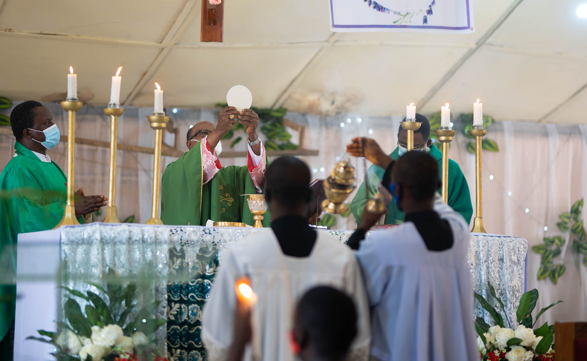
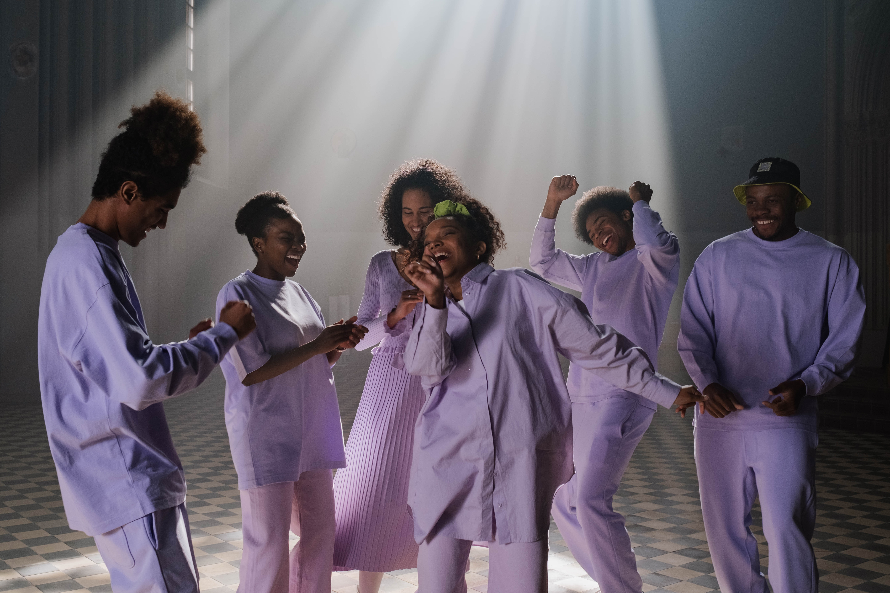
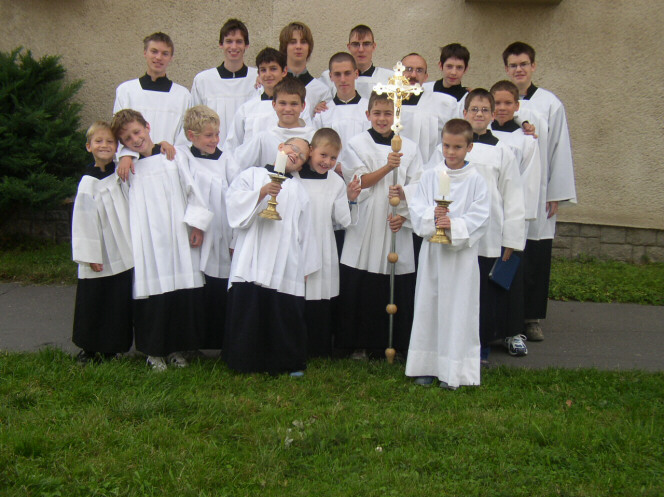
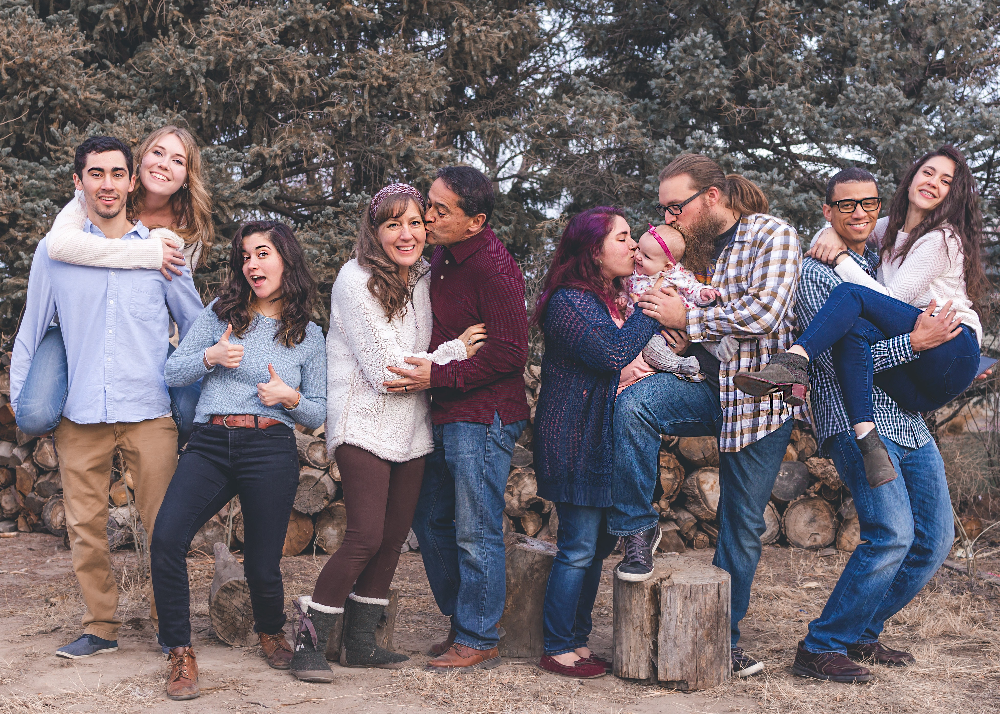

Ti diamo il benvenuto nel sito della comunità cristiana della parrocchia Santa Maria in Campitelli a Grottaglie, in provincia di Taranto. Troverai qui le nostre esperienze e contenuti che ci aiutano a fare un cammino cristiano in comunità.
Ultime notizie
| 28/4/2021 | Inaugurazione Oratorio |
| 27/4/2021 | Auguri di Pasqua |
| 26/4/2021 | Celebrazioni della Settimana Santa |
| 25/4/2021 | Programma della Quaresima |
| 24/4/2021 | Concerto |
| Tutte le notizie | |
Messa
La messa domenicale è al centro della vita della Chiesa: lì incontriamo il Signore risorto, ascoltiamo la sua parola, ci nutriamo alla sua mensa e così diventiamo Chiesa.

Orari (aggiornati il 26/4/2022)
| Feriali | Festivi |
|---|---|
| 10:00 ¹ | |
| 11:15 ² | |
| 19:00 | 19:00 |
(1) Specialmente rivolta ai ragazzi del catechismo ed agli scout
(2) Specialmente rivolta alle giovani famiglie
Adorazione
Adorare Gesù nel Santissimo Sacramento è la risposta di fede e di amore a Colui che essendo Dio, si è fatto uomo, si fece nostro Salvatore, ci ha amati fino a donare la sua vita per noi e continua ad amarci di amore eterno. È il riconoscimento della misericordia e della maestà del Signore, che ha scelto il Santissimo Sacramento per rimanere con noi fino alla fine del mondo.

Orari
Ci incontriamo per l’adorazione tutti i giovedì, dopo la messa del pomeriggio.
Informazioni
Don Gianni 333 1234567
Scout
Branco Fiore Rosso – Grottaglie 2
Lo scoutismo, è un movimento che ha come fine ultimo la formazione fisica, morale e spirituale della gioventù mondiale. Questo metodo educativo è fondato sul volontariato e sull’«imparare facendo» attraverso attività all’aria aperta e in gruppi. Offre ai giovani la possibilità di fare amicizia e vivere esperienze formative divertendosi.

Informazioni
Akela (Pierino) 333 1234567
Musica e canto
La musica e il canto sono parte “necessaria e integrante” della liturgia solenne della Chiesa, e non una semplice decorazione.

Informazioni
| Fabiano e Ciro | Coro delle 10.00 | 333 1234567 | |
| Ignazio e Valeria | Coro delle 11.15 | 333 1234567 | |
| Maestro Tizio | Coro della sera | 333 1234567 | |
| Maestro Caio | Coro polifonico | 333 1234567 |
Ministranti
Il ministrante è quel ragazzo o ragazza che serve all’altare durante le celebrazioni liturgiche. Il termine “ministrante” ha sostituito col tempo il termine “chierichetto” poichè riesce a far capire meglio il suo significato. Deriva infatti dal latino “ministrans”, cioè colui che serve, secondo l’esempio di Gesù che non ha esitato a servirci per primo.

Informazioni
Giuseppe 333 1234567
Catechismo
Il percorso del catechismo prepara i bambini a ricevere i Sacramenti dell’iniziazione cristiana: Riconciliazione, Comunione e Cresima. Gesù ama molto i bambini, e anche noi li amiamo e dedichiamo a loro un’attenzione speciale.

Informazioni
Don Gianni 333 1234567
Oratorio
L’oratorio è l’investimento più concreto con cui una comunità cristiana esprime vicinanza e attenzione alle giovani generazioni.
Informazioni
Sempronio 333 1234567
Catechesi per adulti
Occorre formare una comunità adulta, capace di educare alla vita buona del vangelo, fucina di carismi, testimone di primo annuncio e lanciata verso un feconda evangelizzazione.
Vogliamo rendere la parrocchia un luogo di amicizia, in cui sperimentare la salvezza nell’incontro con Cristo, in un cammino che integra catechesi, liturgia e carità affinchè possa risuonare l’annuncio: “Venite e vedrete”.

Orari
Tieni d’occhio le notizie.
Informazioni
Don Gianni 333 1234567
Gruppo post-cresima
Fondamenti dell’amore umano
Questo corso è rivolto ai ragazzi che vogliono formarsi sul tema dell’amore e riscoprirne i fondamenti biblici.
Scopriremo che l’amore umano e l’amore di Dio non sono né incompatibili, né si contrappongono, anzi si illuminano reciprocamente e rimandano l’uno all’altro.
Costruiremo insieme l’equipaggiamento che serve per arrivare preparati alla scelta di sposarsi.
Orari
Tieni d’occhio le notizie.
Informazioni
Ignazio e Valeria 333 1234567
Preparazione al matrimonio
Un percorso per riflettere sul percorso di coppia in vista del coronamento del vostro amore ed affilare le armi per affrontare al meglio i problemi della coppia e cercare di togliere lavoro agli avvocati divorzisti.

Orari
Tieni d’occhio le notizie.
Informazioni
Ignazio e Valeria 333 1234567
Gruppo giovani famiglie
Soprattutto i primi anni di matrimonio, è innegabile, sono complicati. Vogliamo aiutarci a viverli al meglio.

Orari
Tieni d’occhio le notizie.
Informazioni
Ignazio e Valeria 333 1234567
Campetto
Il nostro campo da calcetto è aperto a tutti.
Informazioni
Altro tizio 333 1234567
Teatro
Il nostro gruppo teatrale è fortissimo.

Informazioni
Altro Caio 333 1234567
Don Gianni
Don Gianni Longo è il nostro parroco.
Contatti
Contattaci!
| Via Garcia Lorca 2, Grottaglie, Taranto | |
| mail@janedoe.com | |
| 333 1234567 |